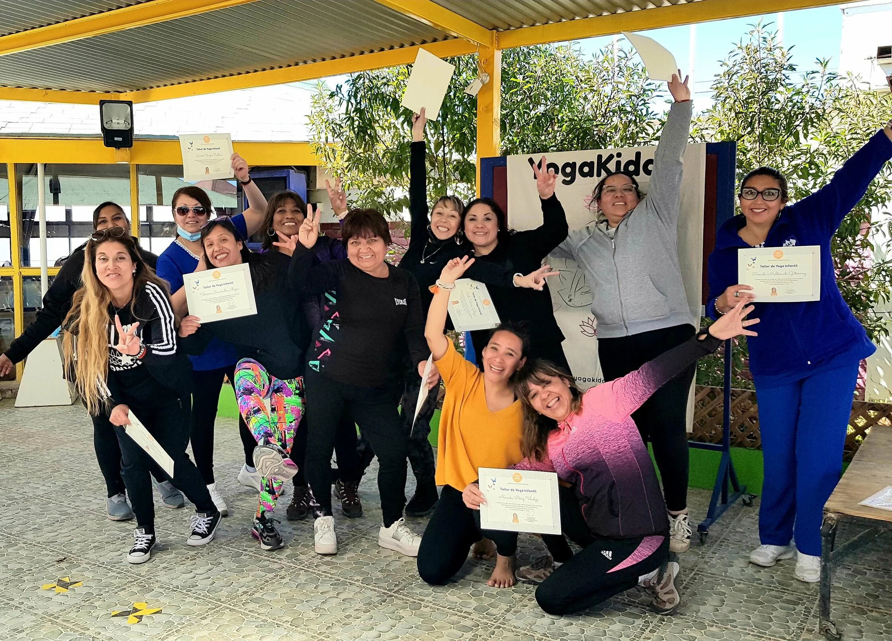
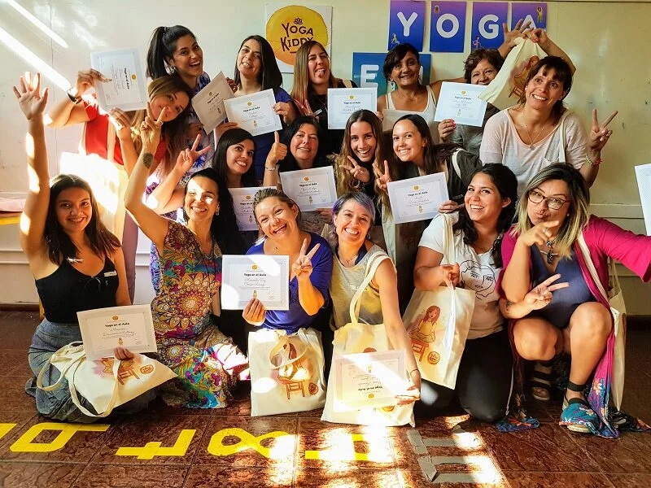
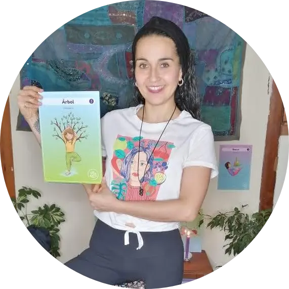
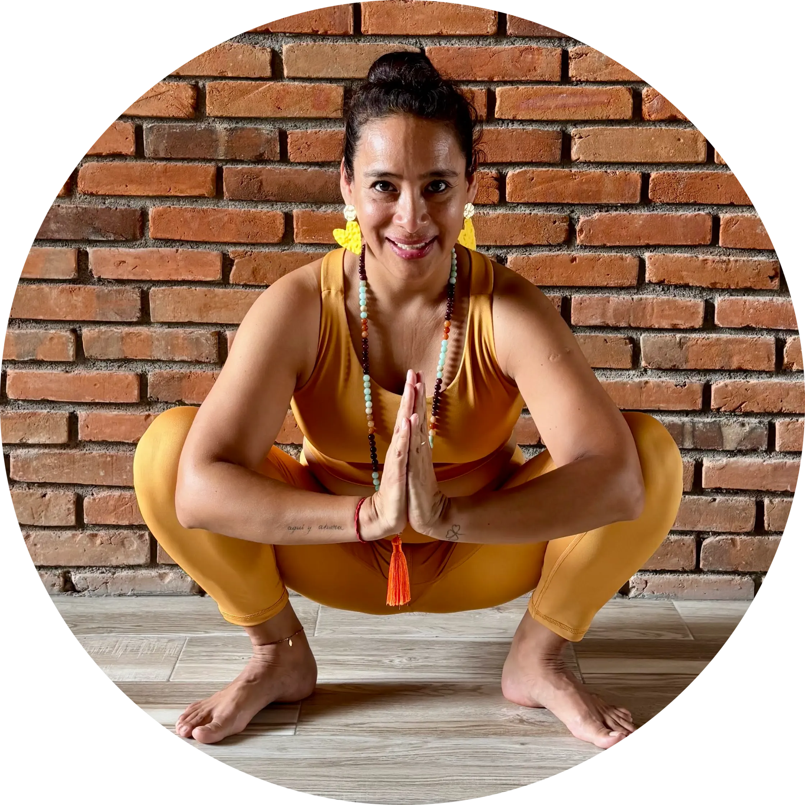

Formación de Yoga en el Aula en línea (vía Google Meet)
6 horas de clases en vivo + 2 horas de contenido audiovisual grabado.
Herramientas prácticas para transformar tu clase
Próxima formación:
13 y 20 febrero 2027 (3 horas cada día más 2 horas de contenido grabado)
Aprende a activar, enfocar y relajar a tus estudiantes en minutos. Con herramientas simples, lúdicas y efectivas, podrás ayudar a tus estudiantes a concentrarse mejor, regular sus emociones y disfrutar más el aprendizaje… sin necesidad de cambiar tu forma de enseñar.
Esta formación ha sido creada para que puedas integrar el yoga en tu jornada escolar de manera realista, concreta y aplicable desde el primer día.

Identifica tus retos
- 😨Tus estudiantes están inquietos y les cuesta concentrarse
- 🔄Te resulta difícil volver al foco después de un recreo o actividad
- 🌋Hay sobrecarga emocional dentro del aula
- ⏳Sientes que necesitas nuevas herramientas, pero no tienes tiempo para formaciones largas
Si algo de esto resuena contigo, esta formación es para ti.
Capacitación con impacto real
- ✔Aplicar pausas activas de 3 a 5 minutos dentro de tu clase
- ✔Manejar momentos de desregulación emocional de forma respetuosa
- ✔Mejorar la atención sin necesidad de imponer silencio
- ✔Crear rutinas simples de inicio y cierre de jornada
- ✔Integrar actividades de bienestar sin alterar tu planificación
Enfoque integral
Aprenderás a integrar el yoga en el aula desde un enfoque:
- 📚Pedagógico
- 🎨Lúdico
- 🧬Terapéutico
- 🙋Respetuoso con los ritmos de cada niño y niña
No se trata de "hacer yoga", sino de crear experiencias que acompañen el aprendizaje y el bienestar.

Programa de la formación
Fundamentos científicos que explican cómo el yoga afecta el cerebro infantil y mejora el aprendizaje, la atención y la regulación emocional.
Aprenderás a utilizar el juego como herramienta pedagógica para enseñar yoga de forma natural y divertida en el aula.
Estrategias prácticas para identificar los momentos clave de intervención y herramientas específicas para cada situación.
Amplio repertorio de recursos adaptados para espacios reducidos y con mobiliario escolar.
Prácticas específicas para cada momento del día: dinámicas de activación, ejercicios de concentración, técnicas de relajación y respiración consciente.
Recibirás una guía para presentar el yoga como herramienta de autorregulación y bienestar (no como práctica religiosa), un modelo de carta para las familias y un mini-informe listo para presentar la propuesta a la dirección de tu centro.
Todo listo para usar
Recibirás material digital original YogaKiddy, listo para usar:
Manual completo de la formación (PDF)
20 láminas de yoga en silla
Póster ABCedario del Yoga
Póster Saludo al Sol en silla
12 cartas del Saludo al Sol
Juego Bingo Yoga Aula
Dados de yoga en silla
Plan de 21 días en tu aula (una micro-práctica diaria)
Guía para presentar el yoga en tu escuela
Modelo de carta para familias
Mini-informe para la dirección
Y más recursos listos para imprimir
Todo diseñado para que puedas aplicar lo aprendido sin tener que crear nada desde cero.
¿Cómo se realiza esta formación?
- 💻Formación 100% online en vivo
- 📹Plataforma: Google Meet
- ⏱Duración total: 6 horas en vivo (divididas en 2 jornadas) + 2 horas de contenido grabado
- 🎥Acceso a grabación por tiempo limitado (3 meses)
- 🎓Certificado de participación YogaKiddy Internacional por 8 horas
13 y 20 febrero 2027
Horarios según país
CHILE 🇨🇱
10:00 a 13:00
$75.000 CLP
URUGUAY 🇺🇾
10:00 a 13:00
75 USD
MÉXICO 🇲🇽
07:00 a 10:00
$1.400 MXN
ESPAÑA 🇪🇸
14:00 a 17:00
75 EUR
👉 Cupos limitados
Formación en vivo por Google Meet.
Esta formación es para ti si trabajas con niños o comunidad educativa
- 👩🏫Docentes
- 🏫Educadoras/es
- 🧠Psicólogos/as
- 🧪Psicopedagogos/as
- 👐Terapeutas ocupacionales
- 🗣Fonoaudiólogos/as
- 🧘Profesores de yoga
- 🎓Profesionales del área educativa
No necesitas experiencia previa en yoga. Solo ganas de aprender y aplicar herramientas con sentido.
¿En qué se diferencia de la formación de Yoga Infantil?
Esta formación está enfocada en:
- ✅Intervenciones dentro del aula
- ✅Espacios reducidos
- ✅Uso de sillas y mobiliario
- ✅Actividades breves y aplicables
Mientras que la formación de yoga infantil está orientada a crear clases completas en espacios abiertos. Ambas formaciones son complementarias.
Lo que dicen quienes ya lo han vivido
"Me llevo herramientas concretas, aplicables y una experiencia muy cercana. Se siente el amor por lo que hacen."
★★★★★
"Lograron traspasar la pantalla con mucha claridad y calidez. Totalmente recomendable."
★★★★★
"Una formación que abre nuevas posibilidades dentro del aula."
★★★★★
Mira la experiencia de quienes ya se formaron:
Tus instructoras

Instructora
Peggysue Silva S.
Psicopedagoga integrativa, instructora de yoga, danzaterapeuta y especialista en trabajo con infancia.

Directora
Carmen Sepúlveda A.
Fundadora de YogaKiddy Academy. Profesora de yoga especializada en yoga infantil, yoga en el aula y yoga inclusivo.
Esta formación la hemos realizado de manera presencial en Chile 🇨🇱, México 🇲🇽, España 🇪🇸 y Bélgica 🇧🇪, y ahora también en línea y en directo.
Resolviendo tus dudas
No. Esta formación está diseñada para principiantes y también para quienes ya trabajan con niños.
Sí. Todas las actividades están pensadas para realizarse dentro del aula, incluso con mesas y sillas.
Sí. Tendrás acceso a material listo para imprimir y usar.
Esta formación está enfocada en el trabajo con niños y niñas de 5 a 10 años. Las actividades pueden adaptarse a otras edades.
Sí se puede, y es una de las situaciones que tenemos en cuenta. Las actividades están pensadas para hacerse dentro del aula, sentados en la silla o de pie junto al pupitre, sin mover mobiliario y sin necesidad de material. Verás estrategias para dar consignas simples y claras, y para proponer las actividades de modo que todo el grupo participe al mismo tiempo.
Lo hemos pensado. En la formación recibirás una guía para presentar el yoga como una herramienta de autorregulación y bienestar, no como una práctica “religiosa”. También tendrás un modelo de carta para las familias y un mini-informe para presentar la propuesta a la dirección de tu centro. Además, las pausas son de 5 a 10 minutos y no alteran tu planificación, lo que facilita empezar de forma sencilla.
La formación está enfocada en niños y niñas de 5 a 10 años, y es ahí donde las actividades funcionan mejor. Muchas se pueden adaptar a otras edades cambiando el lenguaje, el ritmo y la manera de proponerlas, y en la formación te orientaremos para hacerlo. Si trabajas con adolescentes, la base (respiración, pausas activas y relajación) te servirá, pero no incluye propuestas específicas para secundaria.
La formación está pensada para vivirse en directo, porque así puedes practicar, preguntar y resolver dudas en el momento. Si no puedes conectarte a alguna de las sesiones, tendrás acceso a la grabación durante 3 meses para verla cuando te venga mejor.
Más que una capacitación
Formarás parte de una comunidad de personas que creen en una educación más consciente, respetuosa y humana.
Ya hemos acompañado a docentes de distintos países a integrar el yoga en el aula de manera simple y efectiva.
Al terminar la formación, formarás parte de un grupo de WhatsApp donde seguiremos en contacto para compartir experiencias, resolver dudas y contar cómo va la aplicación en el aula.
¿Quieres formar a todo tu equipo docente?
Llevamos la formación de Yoga en el Aula a tu colegio. Si tu escuela está interesada en formar a su equipo educativo, vamos hasta allí y realizamos la formación de manera presencial, adaptada a la realidad de tu escuela.
- 👥Mínimo 10 participantes
- 🌎Disponible en Chile 🇨🇱, México 🇲🇽 y España 🇪🇸
Cuéntanos cuántas personas son y te enviaremos una cotización por grupo.
Solicitar propuesta para mi colegio"La educación no cambia al mundo: cambia a las personas que van a cambiar el mundo"
- Paulo Freire.